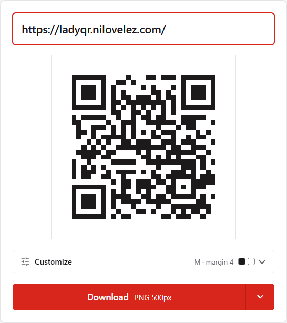
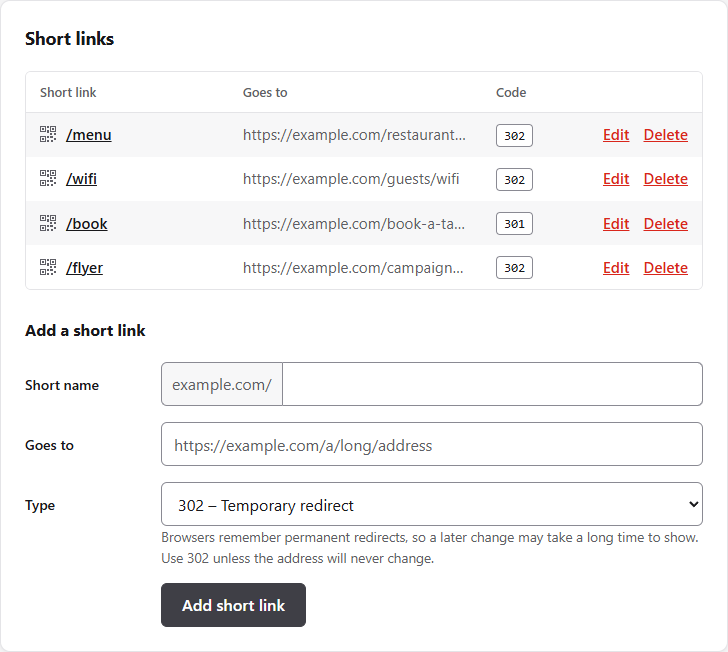

Hi, I'm LadyQR!
Type a link and I make the QR code right here, in your browser. Nothing is uploaded.
What you get
-
Private by construction
The QR code is computed in your browser. The page sends a strict Content Security Policy that forbids any network request, so it could not upload what you type even by mistake.
-
Instant
The code updates on every keystroke. There is no generate button and no waiting.
-
PNG and SVG
Download a 500 px or 1000 px PNG, or a vector SVG that stays sharp at any size, for print or signage.
-
Made to be scanned
Choose the error correction level, the margin and the colors. LadyQR warns you about low contrast and inverted colors, the two most common reasons a code fails to scan.
-
Small and dependency-free
It has its own QR encoder, with no libraries and no build step. PHP only generates the page and answers the short links, so it runs on the cheapest shared hosting.
-
Accessible and translatable
High-contrast borders and full keyboard use. Translations work like WordPress, with standard
.pofiles. English and Spanish are included.
One screen, one job
A text field, the QR code and a download button. Everything else is one click away under Customize.

Your own short links, if you want them
LadyQR can also be a link shortener for your own domain. It is optional: choose it in the installer and you get a private, single-user admin where you add short links such as example.com/menu that redirect to any address. There is no database; the links are kept in a PHP file, so it still runs on the cheapest shared hosting.

The shortener works together with the generator. The small QR icon before each short link opens the editor with that link already filled in, so a short link becomes a printable QR code in one click. The link travels in the address fragment, which your browser never sends to a server.
Don't take our word for it
Privacy claims are cheap, so LadyQR makes them easy to check.
- Open your browser's developer tools, on the Network tab, and type something in the editor at the top of this page.
- No request is made: the page can only load its own files.
- Look at the page's policy.
connect-src 'none'tells the browser to refuse any connection, whatever the code tries to do:
default-src 'none'; script-src 'self'; style-src 'self'; img-src 'self';
font-src 'self'; connect-src 'none'; base-uri 'none'; form-action 'none'The encoder is about 450 lines in assets/qr.js, and the only thing the page remembers is your settings, in your own browser. What you type is never stored.
Run your own
LadyQR is a handful of files. It needs a web server that can run PHP (Apache is the target) and nothing else, not even a database.
- Download the latest release, a zip ready to upload.
- Unzip it and upload the files to your site, for example by FTP.
- Open your site. A short installer asks for the language and whether you want the link shortener, and sets everything up.
The README has the details, and DESIGN.md explains how it looks and why.
Where it is going
- Done: the QR code generator, with PNG and SVG, settings, warnings and translations. It runs on a free 100 MB shared hosting plan, at 1qr.es.
- Done in 1.0.0: an optional link shortener with a private, single-user admin, a web installer, and a release zip you can upload by FTP.
- Done in 1.1.0: smaller codes with the encoder's numeric and alphanumeric modes, a QR code for each short link, straight from the admin, and automated tests.
- Done in 1.2.0: customize the generator page with a
themefolder, without touching LadyQR's files, and set its title and description in the installer. The guide and an example theme are in the release.
The full plan is in docs/PLAN.md.